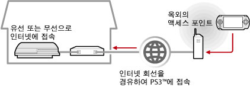
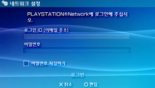

네트워크 > 리모트 플레이하기(인터넷 경유)
리모트 플레이하기(인터넷 경유)
이 기능을 사용하려면 PSP™와 PS3™의 시스템 소프트웨어를 업데이트해야하는 경우가 있습니다.
PSP™의 무선랜 기능을 사용하여, 핫스팟 등으로 불리는 공중 무선랜 서비스의 액세스 포인트에 접속하여 인터넷 경유로 집에 있는 PS3™에 접속합니다. PS3™를 접속 대기 상태로 해 두면 집에서 떨어진 장소나 해외에서 리모트 플레이를 할 수 있습니다.

알아두기
공중 무선랜 서비스의 이용 방법 및 요금은 서비스 제공자에 따라 다릅니다. 상세한 사항은 서비스 제공자에게 문의해 주십시오.
준비하기(1) (PS3™ 및 PSP™)
처음 리모트 플레이를 사용할 때는 PSP™를 PS3™에 등록(페어링)해야 합니다.  (설정) >
(설정) >  (리모트 플레이 설정) > [기기 등록]에서 설정해 주십시오.
(리모트 플레이 설정) > [기기 등록]에서 설정해 주십시오.
준비하기(2) (PS3™)
PS3™를 대기 상태로 하기 위한 설정을 합니다. PSP™에서 PS3™의 전원을 자동으로 켜기 위해(Wake On LAN) PS3™의 [리모트 기동]을 활성화합니다.
1. |
PS3™에서 다음의 설정을 합니다.
|
|---|---|
2. |
PS3™의 전원을 끕니다. |
 (유저)에서 자동 로그인을 설정해 둡니다.
(유저)에서 자동 로그인을 설정해 둡니다. (본체의 전원 끄기)를 선택하여 전원을 꺼 대기 상태로 합니다. 본체의 전원 표시등에 빨간색 불이 들어왔는지 확인해 주십시오.
(본체의 전원 끄기)를 선택하여 전원을 꺼 대기 상태로 합니다. 본체의 전원 표시등에 빨간색 불이 들어왔는지 확인해 주십시오.알아두기
1단계의 각 설정에 대한 상세한 사항은 (설정) > (리모트 플레이 설정) > [리모트 기동]을 참조해 주십시오.
준비하기(3) (PSP™)
PSP™를 액세스 포인트에 접속하기 위해 네트워크 접속을 만듭니다. 인터넷을 경유한 리모트 플레이를 할 때에는 핫스팟 등으로 불리는 공중 무선랜 서비스의 액세스 포인트를 사용할 수 있습니다. 상세한 사항은 PSP™의 온라인 사용자 가이드를 참조해 주십시오.
리모트 플레이하기
1. |
PSP™의 |
|---|---|
2. |
[인터넷 경유로 접속하기]를 선택합니다. |
3. |
접속대상 목록에서 리모트 플레이에 사용할 액세스 포인트의 접속명을 선택합니다. |
4. |
PS3™에서 사용하는 PlayStation®Network의 로그인 ID와 비밀번호를 입력합니다.  접속에 성공하면 PSP™에 PS3™의 화면이 표시됩니다. |
 (네트워크)에서
(네트워크)에서  (리모트 플레이)를 선택합니다.
(리모트 플레이)를 선택합니다.리모트 플레이 종료하기
PSP™의 PS 버튼(HOME 버튼)을 눌러 [리모트 플레이 종료]에서 [PS3™의 전원을 끄고 종료하기]를 선택합니다.
알아두기
파일 복사나 백그라운드 다운로드 등 PS3™에서 작업을 하고 있어, PS3™의 전원을 끄고 싶지 않을 때는 [PS3™의 전원을 끄지 않고 종료하기]를 선택합니다.
인터넷을 경유한 리모트 플레이 접속에 대하여
사용하시는 네트워크 기기에 따라서는 인터넷을 경유한 리모트 플레이를 사용하지 못할 수도 있습니다. 이 경우에는 다음 정보를 확인해 주십시오.
- (설정) >
 (네트워크 설정) > [인터넷 접속 테스트]에서 인터넷 및 PlayStation®Network에 접속할 수 있는지 확인합니다.
(네트워크 설정) > [인터넷 접속 테스트]에서 인터넷 및 PlayStation®Network에 접속할 수 있는지 확인합니다. - 사용하시는 공유기가 UPnP에 대응하는 경우 공유기의 UPnP 기능을 활성화합니다.
- 사용하시는 공유기가 UPnP에 대응하지 않는 경우 인터넷에서 PS3™로의 통신을 허용하기 위해 공유기의 포트 포워딩을 설정해야 합니다. 리모트 플레이에 사용되는 포트 번호는 TCP:9293입니다. 설정 방법에 대해서는 공유기의 사용설명서를 참조해 주십시오.
- 포트 포워딩이란 특정 포트(입구)에 도착한 신호를 지정된 다른 포트(출구)로 전달하는 기능입니다. "포트 매핑" 또는 "주소 변환"이라고도 합니다.
- PS3™가 두 대 이상의 공유기를 경유하여 인터넷에 접속된 경우 올바르게 통신할 수 없는 경우가 있습니다.
알아두기
- 공유기는 하나의 인터넷 회선을 복수의 기기에서 공유하기 위한 장치입니다.
- 공유기 및 인터넷 서비스 제공자가 제공하는 보안 기능에 의해 통신이 제한될 수 있습니다. 인터넷 서비스 제공자(ISP)가 제공하는 정보나 네트워크 기기의 사용설명서도 함께 참조해 주십시오.